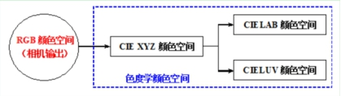
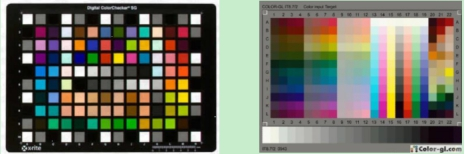
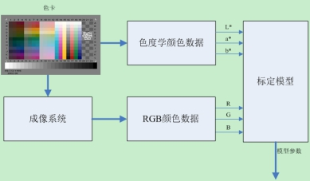

颜色标定的任务是确定由RGB颜色空间到色度学颜色空间之间的转换关系，颜色视觉工具中的颜色标定主要是确定由RGB颜色空间到CIELAB颜色空间之间的转换关系。颜色标定本质上是将实际成像条件（实际成像设备，实际光源）下的颜色值转换到标准成像条件（标准观察者，标准光源）下的颜色值。颜色标定只支持12行×19列的标准IT8 228色卡标定，颜色标定（升级）支持多种格式的色卡标定（须将标准色卡数据调整到指定格式以方便读取且最多支持26行×99列的色卡）。


| 分类 | 参数名称 | 参数描述 |
|---|---|---|
| 属性窗口 | 色卡数据路径 | 需要选择色卡的文件的目录，用于颜色标定。 |
| 保存标定结果 | 将标定的结果保存保存的文件目录。 | |
| 图像窗口 | 输入图像 | 对应的色卡的拍照的图像。 |
| 4个十字GUI | 用于标记图像的色卡的四个角点。 | |
| 数据链 | 输入图像 | 对应的色卡的拍照的图像。 |
| 高级界面 | 无 | 无 |
| 分类 | 参数名称 | 参数描述 |
|---|---|---|
| 监视窗口 | 输入图像 | 对应的色卡的拍照的图像。 |
| 输出图像 | 标定后的图像。 | |
| 色差均值 | 颜色空间转换的色差均值。 | |
| 色差峰值 | 颜色空间转换的色差峰值。 | |
| 色差标准差 | 颜色空间转换的色差标准差。 | |
| 执行结果 | 工具执行结果。 | |
| 执行时间 | 工具执行时间。 | |
| 图像窗口 | 输出图像 | 标定后的图像。 |
| 执行结果 | 显示工具执行结果，执行成功显示“OK”，执行失败显示“NG”，同监视窗口的执行结果参数。 | |
| 数据链 | 输出图像 | 标定后的图像。 |

如图3所示为颜色标定的原理框图，颜色标定由两部分内容组成：
无
参见“\Samples\颜色标定工具.gvp”。